{kind=link}
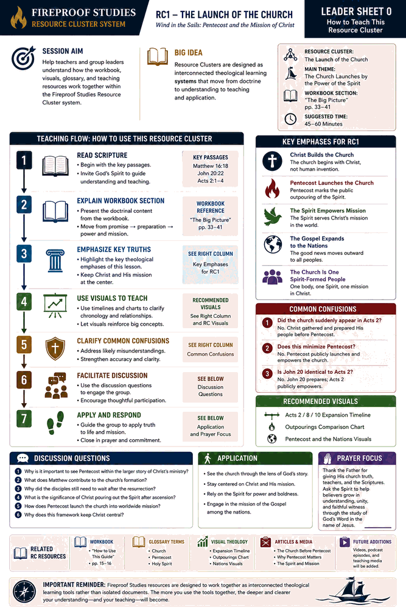
Leader Sheet 0
How to Teach This Resource Cluster
Orientation to the workbook, visuals, glossary, teaching flow, and Resource Cluster system.
Teaching guides for The Launch of the Church: Wind in the Sails. These sheets are designed to help pastors, teachers, and group leaders present the workbook material clearly, sequentially, and faithfully.
Orientation to the Fireproof Studies RC system.
Before Pentecost: Christ prepares His people.
The Spirit is poured out and the church is launched.
Devotion, unity, fellowship, and prayer.
The Spirit empowers witness amid opposition.
The Gospel explained and proclaimed.
Obedience, unity, generosity, and favor.
The Gospel expands beyond Jerusalem.
Growth, fruit, and new communities.
Boldness, signs, unity, and growing impact.
Living as the Spirit-empowered church today.

Orientation to the workbook, visuals, glossary, teaching flow, and Resource Cluster system.
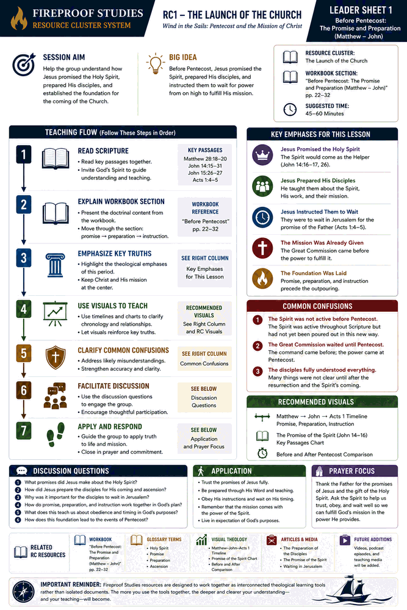
Before Pentecost: Jesus promises the Spirit, prepares His disciples, and tells them to wait.
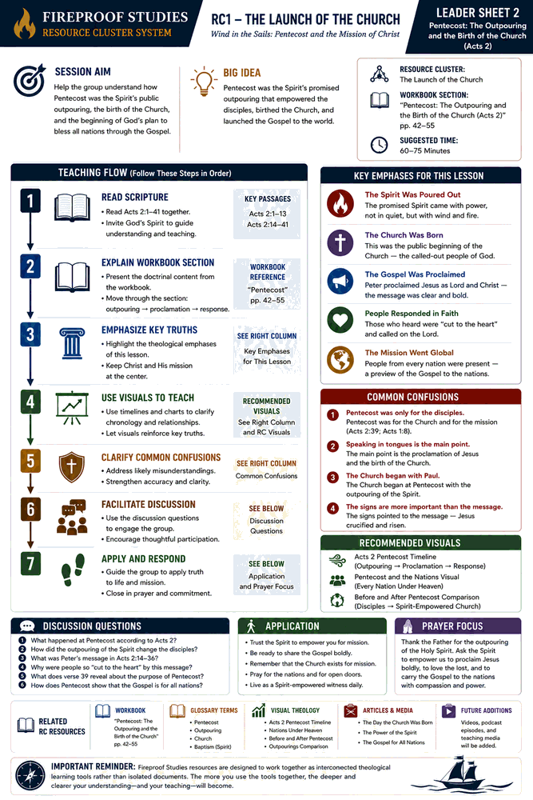
The promised Spirit is poured out, the church is publicly launched, and the Gospel begins moving outward.
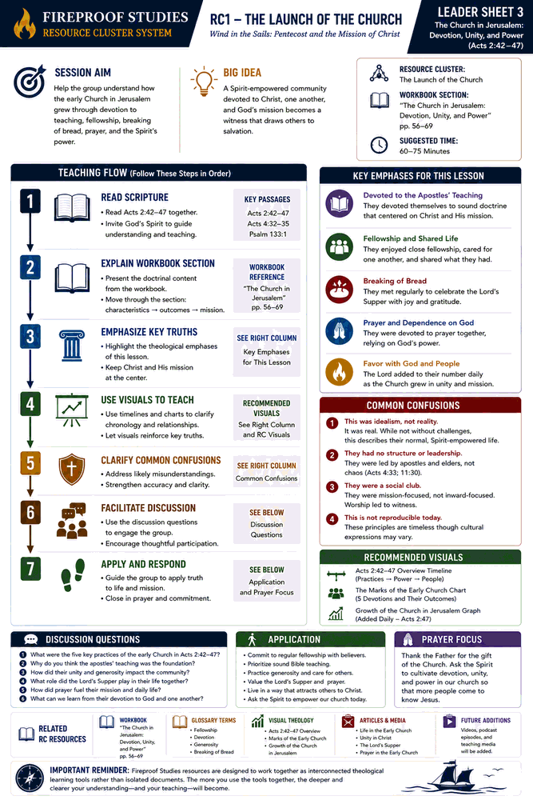
The Spirit-formed church grows through devotion, teaching, fellowship, breaking of bread, and prayer.
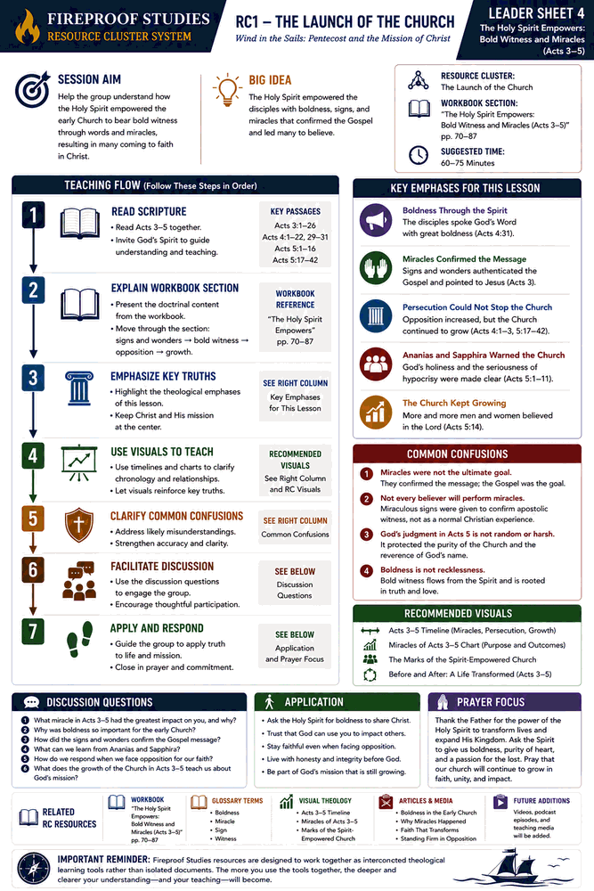
The Spirit empowers bold witness, signs confirm the message, and opposition cannot stop the church.
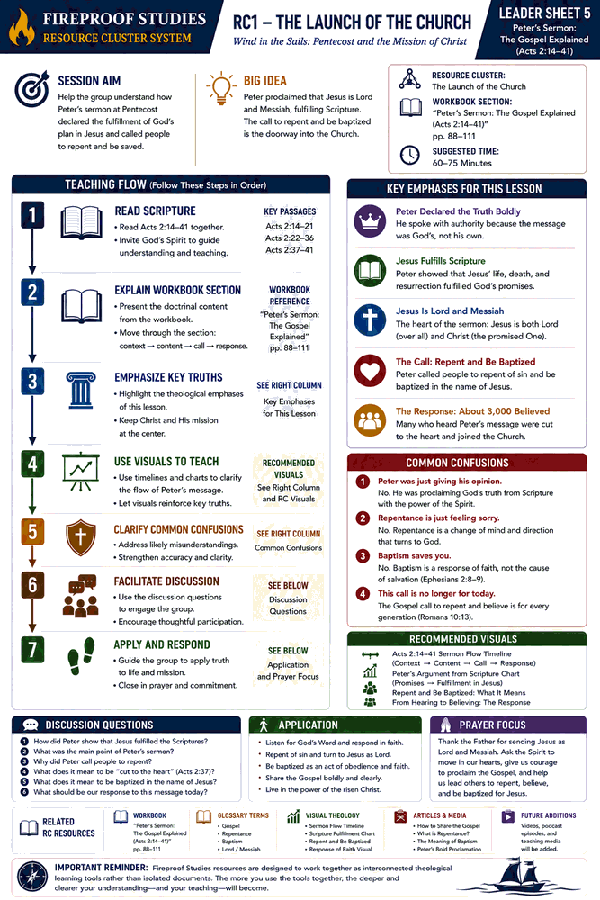
Peter proclaims Christ as Lord and Messiah and calls hearers to repent and be baptized.
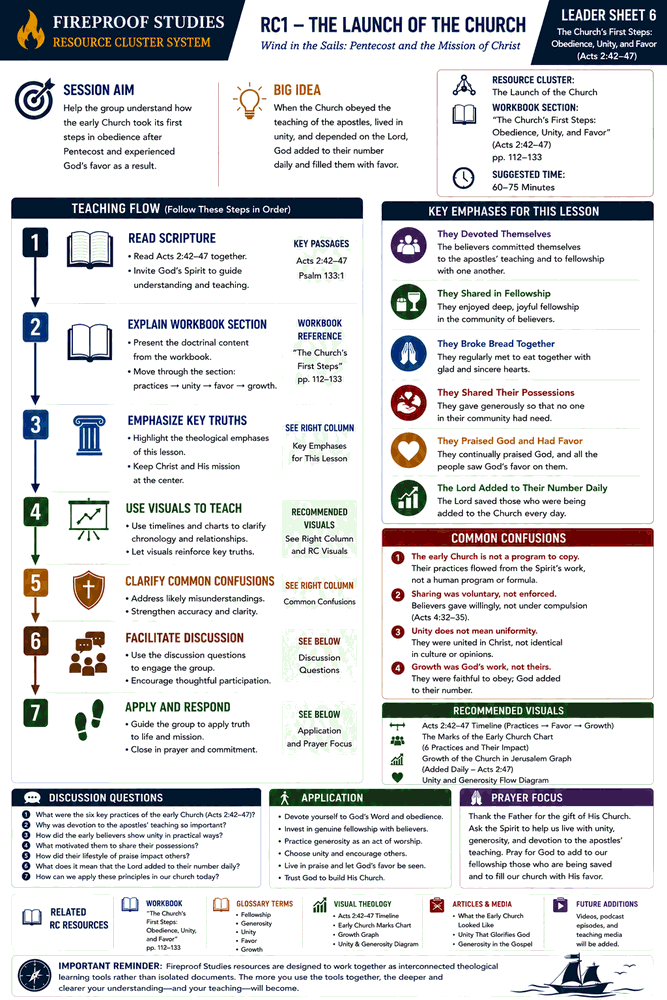
The early church obeys, shares life together, practices generosity, and experiences God’s favor.
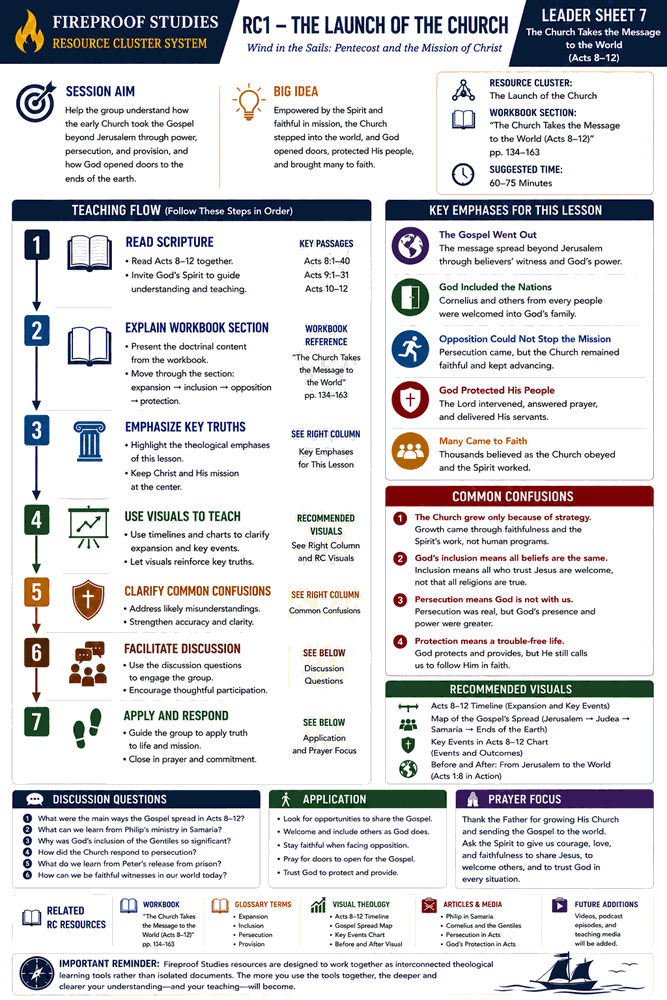
The Gospel moves beyond Jerusalem through Spirit-empowered witness, opposition, and open doors.
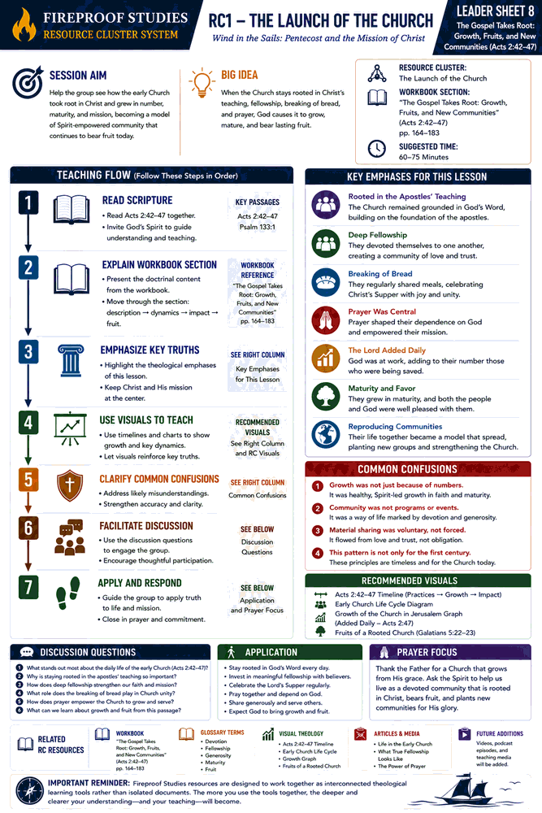
The early church grows in maturity, bears fruit, and becomes a model of Spirit-formed community.
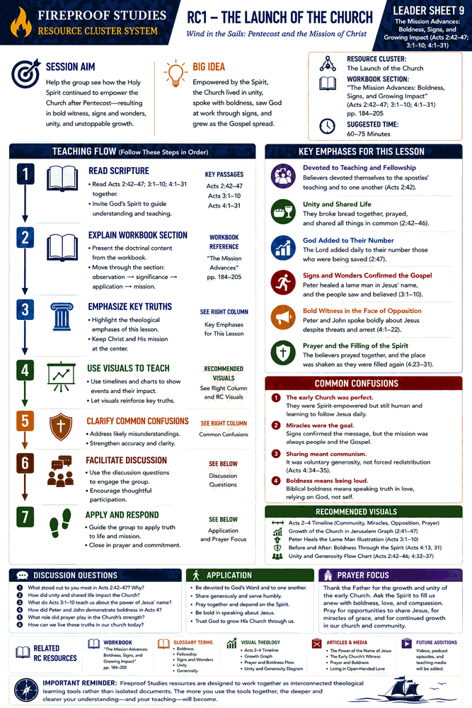
The church continues in unity, prayer, boldness, signs, and Gospel-centered growth.
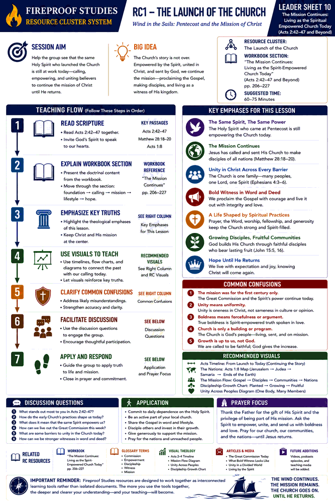
A concluding teaching guide on living as the Spirit-empowered church today until Christ returns.
{kind=link}
{kind=link}
{kind=link}
{kind=link}
{kind=link}
{kind=link}
{kind=link}
{kind=link}
{kind=link}
{kind=link}